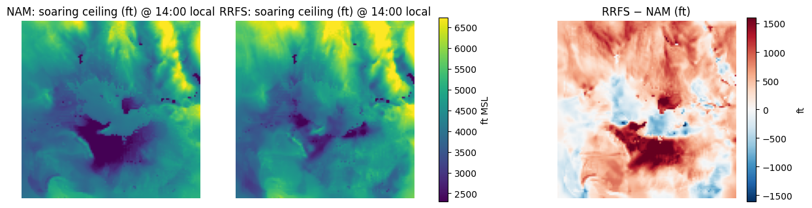
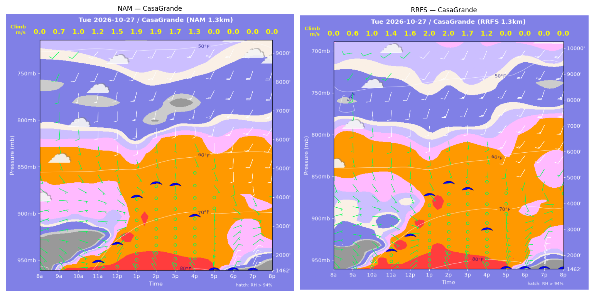
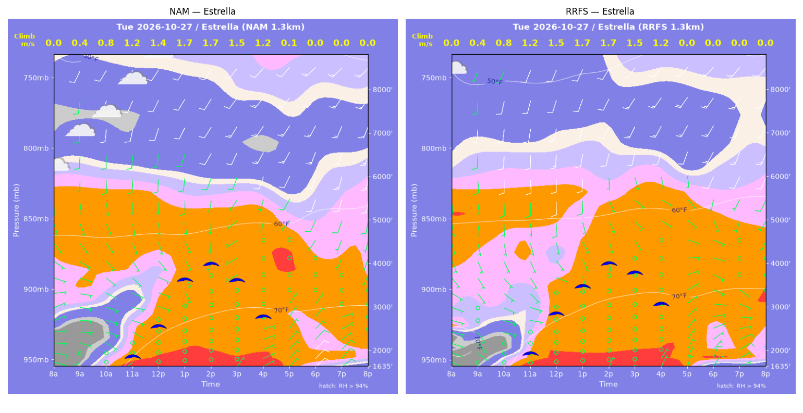
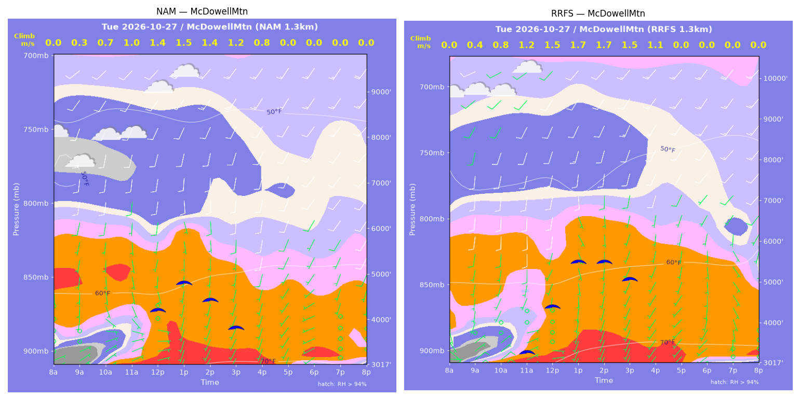
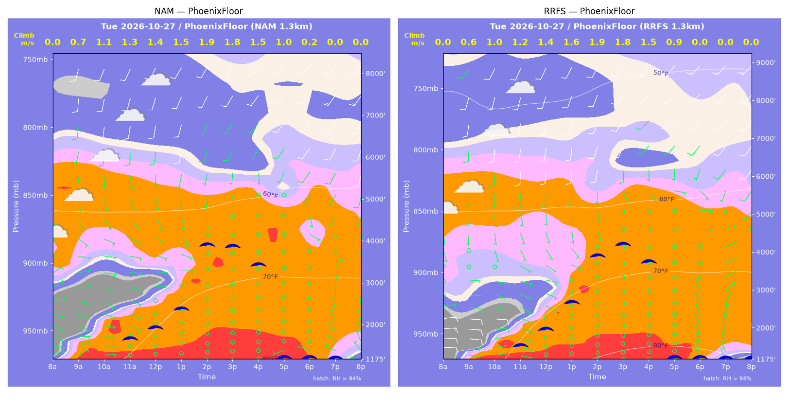
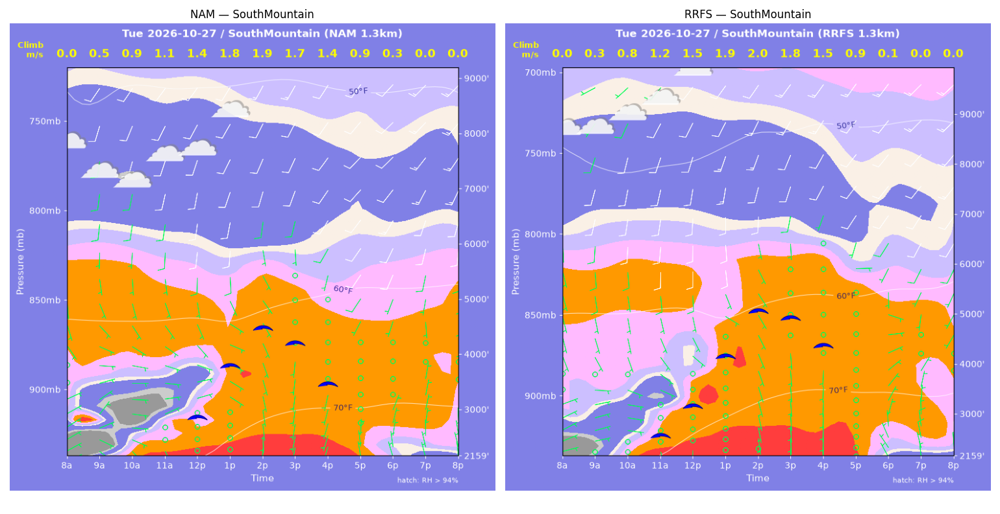
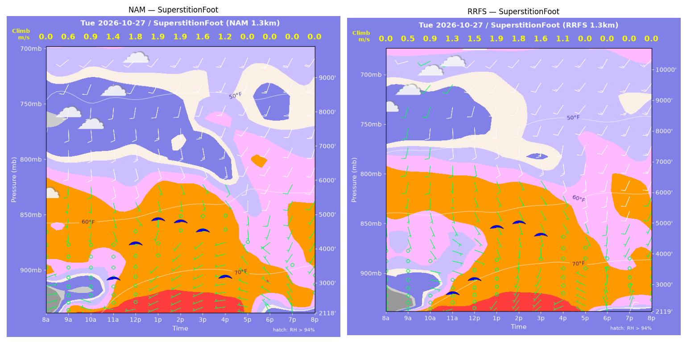
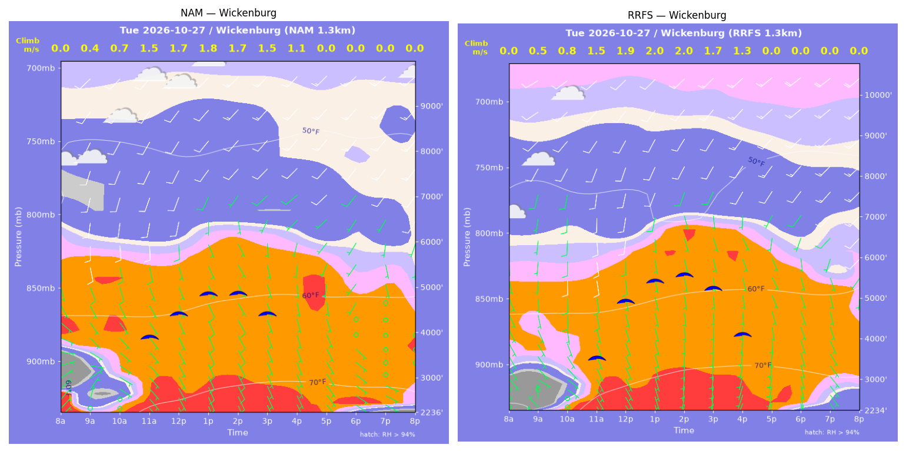

../runs/ab-phoenix-nam — model nam, cycle 2026-10-26 18z, dx 1.3333333740234374 km, 13 hours, grid 114×114../runs/ab-phoenix-rrfs — model rrfs, cycle 2026-10-26 18z, dx 1.3333333740234374 km, 13 hours, grid 114×114Grids identical; afternoon = 12:00–17:59 local (UTC-7). Δ = RRFS − NAM.
| Site | terrain ft | BL top (AGL) med|Δ| / bias (ft) | w* med|Δ| / bias (fpm) | Soaring ceiling med|Δ| / bias (ft) | BL wind speed med|Δ| / bias (kt) | BL wind dir med|Δ| / bias (deg) | 2 m temperature med|Δ| / bias (F) | Sfc LCL (AGL) med|Δ| / bias (ft) | Sensible heat flux med|Δ| / bias (W/m2) |
|---|---|---|---|---|---|---|---|---|---|
| PhoenixFloor | 1175 | 427 / +324 | 8 / +4 | 164 / +161 | 1 / +0 | 18 / -2 | 2 / +2 | 1740 / +1763 | 6 / +0 |
| SouthMountain | 2160 | 838 / +887 | 25 / +23 | 458 / +467 | 1 / -1 | 7 / -0 | 2 / +3 | 2045 / +2109 | 9 / +0 |
| SuperstitionFoot | 2119 | 310 / -10 | 14 / -19 | 151 / -279 | 2 / -1 | 3 / -4 | 1 / +1 | 1619 / +1571 | 23 / -19 |
| Estrella | 1635 | 296 / +331 | 8 / +4 | 154 / +101 | 1 / -0 | 21 / -12 | 2 / +2 | 1322 / +1335 | 9 / +7 |
| Wickenburg | 2236 | 822 / +838 | 42 / +34 | 619 / +730 | 1 / +2 | 22 / -4 | 2 / +2 | 1980 / +2156 | 32 / +28 |
| CasaGrande | 1462 | 414 / +354 | 12 / +7 | 311 / +129 | 2 / -1 | 4 / +5 | 2 / +2 | 1785 / +1789 | 2 / +1 |
| McDowellMtn | 3017 | 924 / +792 | 51 / +42 | 425 / +519 | 1 / -1 | 7 / +2 | 2 / +2 | 1936 / +1871 | 35 / +28 |
| Metric | n | median |Δ| | p90 |Δ| | bias |
|---|---|---|---|---|
| BL top (AGL) (ft) | 42 | 473 | 1295 | +502 |
| w* (fpm) | 42 | 17 | 47 | +14 |
| Soaring ceiling (ft) | 42 | 296 | 965 | +261 |
| BL wind speed (kt) | 42 | 1 | 3 | -0 |
| BL wind dir (deg) | 42 | 8 | 34 | -2 |
| 2 m temperature (F) | 42 | 2 | 3 | +2 |
| Sfc LCL (AGL) (ft) | 42 | 1795 | 2126 | +1799 |
| Sensible heat flux (W/m2) | 42 | 10 | 37 | +6 |
diffmap_tol.png| local | BL top NAM/RRFS ft | w* NAM/RRFS fpm | ceiling NAM/RRFS ft | BL wind NAM/RRFS | T2 NAM/RRFS F | HFX NAM/RRFS |
|---|---|---|---|---|---|---|
| 08:00 | 0 / 0 | 0 / 0 | 1175 / 1175 | 2kt@056 / 4kt@091 | 61 / 61 | 0 / 0 |
| 09:00 | 806 / 496 | 146 / 120 | 1175 / 1175 | 7kt@114 / 9kt@094 | 66 / 66 | 60 / 54 |
| 10:00 | 1315 / 938 | 212 / 189 | 1175 / 1175 | 7kt@122 / 8kt@084 | 69 / 70 | 112 / 112 |
| 11:00 | 1533 / 1333 | 248 / 241 | 1726 / 1603 | 7kt@101 / 5kt@120 | 73 / 74 | 155 / 164 |
| 12:00 | 1763 / 1792 | 273 / 277 | 1966 / 2001 | 5kt@087 / 3kt@108 | 75 / 78 | 180 / 187 |
| 13:00 | 2333 / 2720 | 303 / 323 | 2386 / 2678 | 4kt@110 / 3kt@143 | 78 / 80 | 188 / 196 |
| 14:00 | 4385 / 4373 | 370 / 371 | 3862 / 3857 | 7kt@191 / 6kt@177 | 80 / 82 | 183 / 185 |
| 15:00 | 4487 / 4954 | 348 / 357 | 3810 / 4139 | 6kt@184 / 8kt@177 | 81 / 83 | 148 / 146 |
| 16:00 | 4431 / 4939 | 292 / 298 | 3374 / 3686 | 4kt@181 / 6kt@175 | 82 / 83 | 89 / 85 |
| 17:00 | 3938 / 4506 | 191 / 174 | 1175 / 1175 | 2kt@154 / 3kt@112 | 81 / 83 | 28 / 18 |
| 18:00 | 1474 / 1197 | 46 / 0 | 1175 / 1175 | 2kt@333 / 4kt@338 | 81 / 81 | 1 / -2 |
| 19:00 | 490 / 514 | 0 / 0 | 1175 / 1175 | 4kt@321 / 6kt@347 | 79 / 79 | -1 / -6 |
| 20:00 | 381 / 554 | 0 / 0 | 1175 / 1175 | 6kt@336 / 9kt@359 | 77 / 78 | -1 / -7 |
| local | BL top NAM/RRFS ft | w* NAM/RRFS fpm | ceiling NAM/RRFS ft | BL wind NAM/RRFS | T2 NAM/RRFS F | HFX NAM/RRFS |
|---|---|---|---|---|---|---|
| 08:00 | 0 / 0 | 0 / 0 | 2160 / 2160 | 3kt@065 / 3kt@092 | 61 / 63 | 0 / 0 |
| 09:00 | 269 / 228 | 90 / 63 | 2160 / 2160 | 4kt@127 / 3kt@081 | 66 / 68 | 41 / 17 |
| 10:00 | 778 / 750 | 177 / 163 | 2160 / 2160 | 5kt@103 / 4kt@116 | 67 / 70 | 109 / 90 |
| 11:00 | 1113 / 1372 | 224 / 245 | 2160 / 2631 | 5kt@095 / 3kt@120 | 69 / 72 | 155 / 167 |
| 12:00 | 1620 / 2050 | 277 / 299 | 2906 / 3204 | 6kt@116 / 3kt@134 | 71 / 74 | 205 / 203 |
| 13:00 | 2832 / 3286 | 346 / 368 | 3814 / 4166 | 7kt@159 / 6kt@165 | 74 / 76 | 227 / 238 |
| 14:00 | 3801 / 4512 | 365 / 395 | 4466 / 5030 | 6kt@179 / 7kt@176 | 75 / 78 | 200 / 215 |
| 15:00 | 3574 / 4539 | 331 / 359 | 4179 / 4882 | 6kt@182 / 5kt@186 | 76 / 79 | 159 / 160 |
| 16:00 | 2957 / 4298 | 268 / 296 | 3443 / 4326 | 2kt@169 / 2kt@149 | 76 / 79 | 102 / 95 |
| 17:00 | 1729 / 3147 | 171 / 182 | 2160 / 2160 | 2kt@130 / 2kt@122 | 75 / 78 | 45 / 30 |
| 18:00 | 298 / 108 | 56 / 25 | 2160 / 2160 | 4kt@011 / 4kt@319 | 75 / 76 | 9 / 2 |
| 19:00 | 283 / 598 | 0 / 0 | 2160 / 2160 | 4kt@003 / 7kt@354 | 74 / 74 | -0 / -1 |
| 20:00 | 437 / 634 | 0 / 0 | 2160 / 2160 | 6kt@351 / 8kt@001 | 73 / 73 | -1 / -2 |
| local | BL top NAM/RRFS ft | w* NAM/RRFS fpm | ceiling NAM/RRFS ft | BL wind NAM/RRFS | T2 NAM/RRFS F | HFX NAM/RRFS |
|---|---|---|---|---|---|---|
| 08:00 | 0 / 0 | 0 / 0 | 2119 / 2119 | 6kt@068 / 1kt@106 | 60 / 64 | 0 / 0 |
| 09:00 | 588 / 312 | 119 / 95 | 2119 / 2119 | 2kt@355 / 0kt@060 | 70 / 69 | 44 / 42 |
| 10:00 | 811 / 960 | 185 / 177 | 2119 / 2119 | 1kt@045 / 4kt@101 | 71 / 72 | 121 / 89 |
| 11:00 | 2211 / 1727 | 285 / 252 | 3178 / 2768 | 4kt@162 / 5kt@105 | 74 / 75 | 162 / 143 |
| 12:00 | 3493 / 2221 | 348 / 287 | 4169 / 3195 | 10kt@163 / 7kt@132 | 76 / 77 | 188 / 165 |
| 13:00 | 4379 / 4512 | 380 / 365 | 4842 / 4858 | 11kt@165 / 8kt@163 | 78 / 79 | 195 / 168 |
| 14:00 | 4355 / 4799 | 365 / 356 | 4763 / 4986 | 11kt@159 / 10kt@163 | 79 / 80 | 175 / 147 |
| 15:00 | 4285 / 4598 | 324 / 312 | 4496 / 4575 | 11kt@159 / 13kt@167 | 79 / 80 | 125 / 102 |
| 16:00 | 3572 / 3877 | 236 / 218 | 3140 / 2119 | 10kt@158 / 8kt@158 | 78 / 80 | 57 / 41 |
| 17:00 | 974 / 989 | 0 / 0 | 2119 / 2119 | 4kt@307 / 3kt@305 | 75 / 77 | -3 / -2 |
| 18:00 | 493 / 297 | 0 / 0 | 2119 / 2119 | 7kt@301 / 4kt@348 | 70 / 72 | -4 / -4 |
| 19:00 | 428 / 284 | 0 / 0 | 2119 / 2119 | 5kt@328 / 3kt@022 | 69 / 71 | -4 / -11 |
| 20:00 | 84 / 262 | 0 / 0 | 2119 / 2119 | 8kt@030 / 4kt@025 | 68 / 70 | -8 / -8 |
| local | BL top NAM/RRFS ft | w* NAM/RRFS fpm | ceiling NAM/RRFS ft | BL wind NAM/RRFS | T2 NAM/RRFS F | HFX NAM/RRFS |
|---|---|---|---|---|---|---|
| 08:00 | 0 / 0 | 0 / 0 | 1635 / 1636 | 4kt@108 / 3kt@117 | 58 / 64 | 0 / 0 |
| 09:00 | 248 / 247 | 81 / 83 | 1635 / 1636 | 2kt@171 / 2kt@142 | 67 / 70 | 33 / 35 |
| 10:00 | 652 / 537 | 153 / 150 | 1635 / 1636 | 3kt@114 / 2kt@095 | 69 / 71 | 84 / 97 |
| 11:00 | 1448 / 1374 | 227 / 232 | 1923 / 1993 | 4kt@104 / 3kt@101 | 73 / 75 | 124 / 141 |
| 12:00 | 2106 / 2453 | 274 / 297 | 2584 / 2879 | 4kt@116 / 4kt@138 | 75 / 77 | 150 / 167 |
| 13:00 | 3523 / 3278 | 331 / 330 | 3625 / 3481 | 8kt@179 / 7kt@163 | 77 / 79 | 160 / 171 |
| 14:00 | 4090 / 4038 | 335 / 341 | 3968 / 3971 | 8kt@203 / 7kt@177 | 78 / 80 | 143 / 154 |
| 15:00 | 3900 / 4057 | 294 / 304 | 3584 / 3749 | 5kt@202 / 6kt@162 | 79 / 80 | 101 / 109 |
| 16:00 | 3767 / 4246 | 237 / 242 | 2744 / 3028 | 6kt@197 / 6kt@176 | 78 / 80 | 54 / 52 |
| 17:00 | 279 / 1576 | 20 / 0 | 1635 / 1636 | 7kt@047 / 5kt@053 | 77 / 78 | -0 / -3 |
| 18:00 | 822 / 691 | 0 / 0 | 1635 / 1636 | 7kt@041 / 8kt@059 | 73 / 73 | -8 / -7 |
| 19:00 | 680 / 697 | 0 / 0 | 1635 / 1636 | 7kt@046 / 8kt@063 | 72 / 72 | -7 / -6 |
| 20:00 | 416 / 491 | 0 / 0 | 1635 / 1636 | 6kt@058 / 7kt@055 | 70 / 71 | -8 / -8 |
| local | BL top NAM/RRFS ft | w* NAM/RRFS fpm | ceiling NAM/RRFS ft | BL wind NAM/RRFS | T2 NAM/RRFS F | HFX NAM/RRFS |
|---|---|---|---|---|---|---|
| 08:00 | 0 / 0 | 0 / 0 | 2236 / 2235 | 7kt@043 / 3kt@314 | 58 / 56 | 0 / 0 |
| 09:00 | 376 / 269 | 84 / 95 | 2236 / 2235 | 3kt@020 / 3kt@357 | 66 / 63 | 22 / 49 |
| 10:00 | 657 / 712 | 141 / 161 | 2236 / 2235 | 5kt@125 / 6kt@129 | 70 / 70 | 62 / 89 |
| 11:00 | 3386 / 2666 | 295 / 294 | 3938 / 3570 | 8kt@169 / 9kt@170 | 73 / 74 | 113 / 147 |
| 12:00 | 3850 / 4348 | 335 / 376 | 4429 / 4925 | 9kt@176 / 10kt@186 | 74 / 76 | 145 / 190 |
| 13:00 | 4377 / 4953 | 356 / 399 | 4848 / 5403 | 7kt@179 / 8kt@192 | 75 / 77 | 154 / 199 |
| 14:00 | 4484 / 5243 | 344 / 387 | 4847 / 5530 | 6kt@168 / 9kt@202 | 75 / 78 | 136 / 171 |
| 15:00 | 4238 / 5124 | 297 / 341 | 4379 / 5196 | 4kt@203 / 6kt@170 | 76 / 78 | 91 / 119 |
| 16:00 | 4006 / 4968 | 216 / 250 | 2236 / 4065 | 5kt@224 / 7kt@183 | 75 / 77 | 36 / 48 |
| 17:00 | 2030 / 3380 | 0 / 0 | 2236 / 2235 | 4kt@164 / 6kt@155 | 73 / 74 | -2 / -3 |
| 18:00 | 353 / 442 | 0 / 0 | 2236 / 2235 | 4kt@129 / 5kt@166 | 69 / 69 | -3 / -3 |
| 19:00 | 84 / 84 | 0 / 0 | 2236 / 2235 | 4kt@124 / 4kt@154 | 67 / 67 | -2 / -2 |
| 20:00 | 84 / 84 | 0 / 0 | 2236 / 2235 | 7kt@086 / 4kt@122 | 65 / 65 | -6 / -2 |
| local | BL top NAM/RRFS ft | w* NAM/RRFS fpm | ceiling NAM/RRFS ft | BL wind NAM/RRFS | T2 NAM/RRFS F | HFX NAM/RRFS |
|---|---|---|---|---|---|---|
| 08:00 | 0 / 0 | 0 / 0 | 1462 / 1463 | 3kt@122 / 3kt@121 | 57 / 58 | 0 / 0 |
| 09:00 | 501 / 382 | 133 / 121 | 1462 / 1463 | 6kt@139 / 4kt@151 | 64 / 67 | 72 / 70 |
| 10:00 | 899 / 944 | 198 / 195 | 1462 / 1463 | 5kt@119 / 4kt@145 | 69 / 72 | 133 / 122 |
| 11:00 | 1194 / 1761 | 237 / 270 | 1817 / 2239 | 4kt@094 / 5kt@111 | 73 / 77 | 173 / 175 |
| 12:00 | 1941 / 2442 | 290 / 317 | 2416 / 2787 | 4kt@106 / 5kt@141 | 77 / 79 | 196 / 204 |
| 13:00 | 4109 / 4516 | 375 / 388 | 3999 / 4307 | 10kt@176 / 8kt@177 | 80 / 82 | 201 / 204 |
| 14:00 | 4805 / 5226 | 379 / 389 | 4445 / 4760 | 12kt@179 / 12kt@186 | 81 / 83 | 178 / 178 |
| 15:00 | 5053 / 5222 | 339 / 343 | 4369 / 4495 | 10kt@179 / 7kt@173 | 82 / 84 | 121 / 122 |
| 16:00 | 4794 / 4645 | 254 / 241 | 3297 / 2948 | 9kt@173 / 8kt@171 | 82 / 84 | 53 / 47 |
| 17:00 | 1296 / 2073 | 0 / 0 | 1462 / 1463 | 4kt@001 / 2kt@358 | 79 / 80 | -3 / -2 |
| 18:00 | 611 / 583 | 0 / 0 | 1462 / 1463 | 8kt@034 / 8kt@026 | 74 / 74 | -7 / -8 |
| 19:00 | 522 / 539 | 0 / 0 | 1462 / 1463 | 9kt@041 / 11kt@013 | 72 / 71 | -12 / -15 |
| 20:00 | 324 / 448 | 0 / 0 | 1462 / 1463 | 8kt@036 / 13kt@011 | 70 / 69 | -6 / -9 |
| local | BL top NAM/RRFS ft | w* NAM/RRFS fpm | ceiling NAM/RRFS ft | BL wind NAM/RRFS | T2 NAM/RRFS F | HFX NAM/RRFS |
|---|---|---|---|---|---|---|
| 08:00 | 0 / 0 | 0 / 0 | 3017 / 3017 | 3kt@062 / 4kt@064 | 60 / 62 | 0 / 0 |
| 09:00 | 202 / 302 | 68 / 88 | 3017 / 3017 | 5kt@050 / 6kt@054 | 63 / 66 | 21 / 33 |
| 10:00 | 499 / 665 | 128 / 159 | 3017 / 3017 | 4kt@071 / 5kt@056 | 66 / 67 | 60 / 92 |
| 11:00 | 1091 / 1410 | 192 / 230 | 3017 / 3344 | 3kt@123 / 2kt@169 | 68 / 70 | 94 / 131 |
| 12:00 | 2777 / 2801 | 272 / 297 | 4254 / 4433 | 7kt@186 / 7kt@193 | 70 / 72 | 105 / 142 |
| 13:00 | 3623 / 4284 | 293 / 341 | 4824 / 5494 | 10kt@183 / 10kt@183 | 71 / 74 | 101 / 141 |
| 14:00 | 3089 / 4277 | 277 / 340 | 4434 / 5485 | 8kt@172 / 9kt@181 | 72 / 74 | 99 / 141 |
| 15:00 | 2769 / 4005 | 237 / 297 | 3831 / 5046 | 8kt@180 / 8kt@190 | 72 / 75 | 68 / 100 |
| 16:00 | 2089 / 3425 | 164 / 220 | 3017 / 3017 | 8kt@191 / 4kt@184 | 72 / 74 | 28 / 47 |
| 17:00 | 1308 / 1616 | 0 / 0 | 3017 / 3017 | 5kt@221 / 3kt@215 | 70 / 73 | -2 / -2 |
| 18:00 | 342 / 333 | 0 / 0 | 3017 / 3017 | 3kt@238 / 3kt@231 | 68 / 69 | -1 / -1 |
| 19:00 | 84 / 84 | 0 / 0 | 3017 / 3017 | 2kt@271 / 2kt@299 | 67 / 69 | -0 / -0 |
| 20:00 | 83 / 84 | 0 / 0 | 3017 / 3017 | 3kt@024 / 1kt@017 | 66 / 68 | -1 / -0 |
montage_PhoenixFloor.pngmontage_SouthMountain.pngmontage_SuperstitionFoot.pngmontage_Estrella.pngmontage_Wickenburg.pngmontage_CasaGrande.pngmontage_McDowellMtn.png